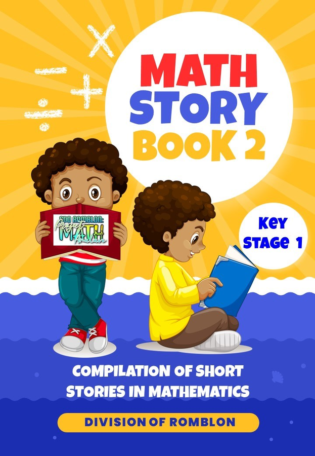

Mga bagong interactive na kwentong may matematika — basahin nang malakas, sagutan ang mga math problem, at subukan ang iyong pag-unawa. Isang subproject ng Project KABULIG, SDO Romblon.
Babasahin mo ang bawat pahina ng kwento — pindutin ang mikropono kapag handa ka nang magbasa, at pindutin din ito kapag tapos ka na. Sa kanang bahagi makikita ang guhit ng bawat eksena. May mga interactive math problem na kailangan mong sagutan, at sa dulo ay may mga tanong tungkol sa kwento.
Walang itatanong na pangalan ng bata — paaralan at distrito lang.
Tip: Gamitin ang Chrome browser para gumana nang maayos ang mikropono.
Piliin ang kwentong babasahin.
Tapos mo na ang kwento